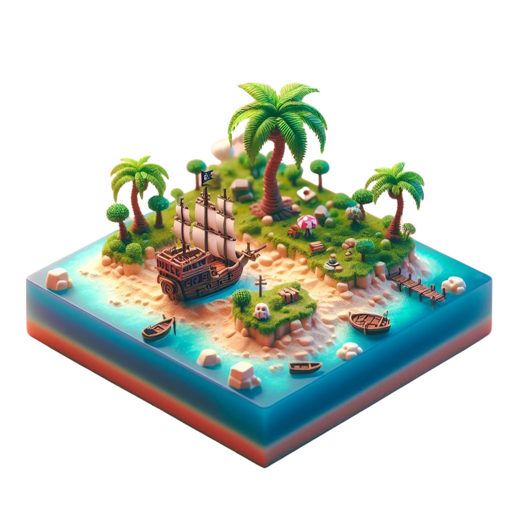
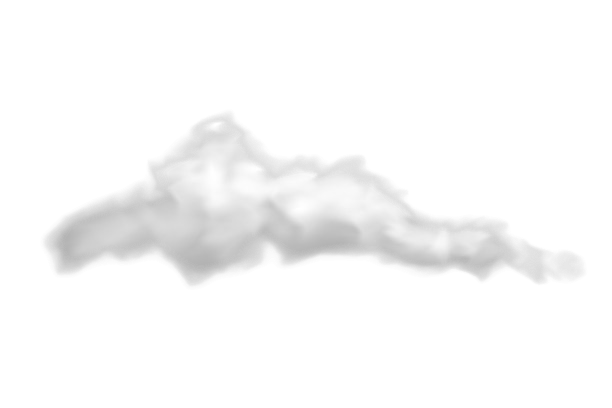
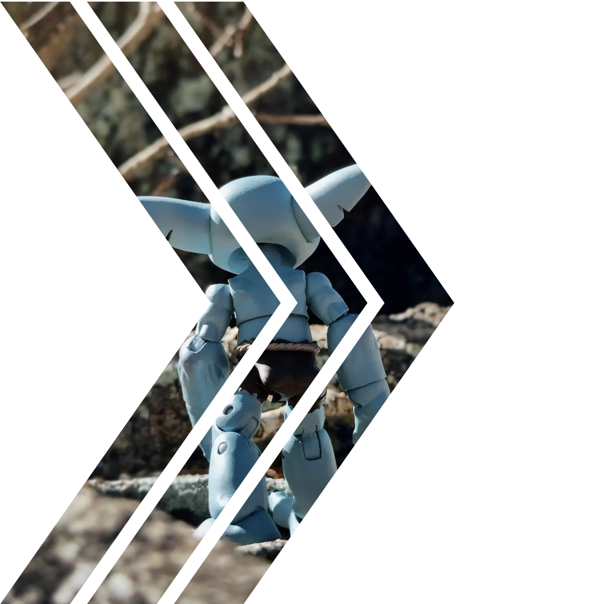

Welcome to Plunder !
planet
lings
Plunderlings aims to present a fresh take on fantasy universes from a Caribbean perspective. A place where the “monsters” are pirate adventurers with emotions, hopes and dreams of their own.


1/12
Scale
Action
Figure
Plunderlings will continue expand this new world to incorporate new creatures inspired from island animals, legends and history.


Drench Abyss Limited Edition


Thank you for giving us so much love, we appreciate it.
News!


img
Where can I buy Plunderlings?
Where can I buy hatchlings and accessories?
Accessories and hatchlings are still in limited quantities, however, from time to time we have sales through this website's shop. Subscribe or fill out our contact form to be added to our mailing list for future sale updates.
